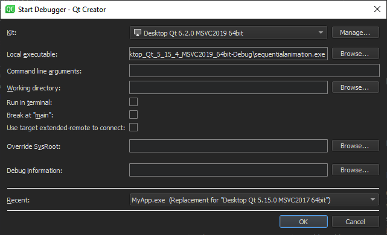

Start and debug an external application
To debug any executable on your local or on a remote machine without using a project, specify a build and run kit that identifies the device to debug the application on.
While the start external debugger mode does not strictly require a project to be open in Qt Creator, opening it makes setting breakpoints and stepping through the code easier.
To start and debug an external application:
- Go to Debug > Start Debugging > Start and Debug External Application.

- In Kit, select the build and run kit to use for building the project.
- In Local executable, specify the path to the application executable on the local machine.
- In Command line arguments, specify command line arguments to be passed to the executable.
- In Working directory, specify the working directory. It defaults to the directory of the build result.
- Select Run in terminal for console applications.
- Select Break at "main" to stop the debugger at the main function.
- Select Use target extended-remote to connect to create the connection in the
target extended-remote mode. In this mode, when the debugged application exits or you detach from it, the debugger remains connected to the target. You can rerun the application, attach to a running application, or use monitor commands specific to the target. For example, GDB does not exit unless it was invoked using the--onceoption, but you can make it exit by using themonitor exitcommand. - In Override SysRoot, specify the path to the
sysrootto use instead of the defaultsysroot. - In Debug information, specify the location for storing debug information. You cannot use an empty path.
- In Recent, you can select a recent configuration to use.
See also Activate kits for a project, How To: Debug, Debugging, Debuggers, and Debugger.